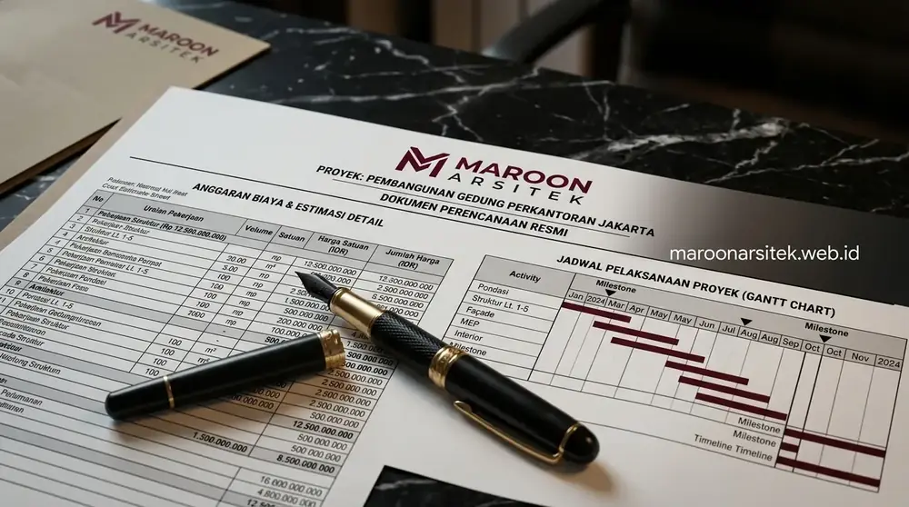

Cara memilih jasa arsitek rumah yang tepat dimulai dari memeriksa portofolio, memastikan kesesuaian gaya desain, dan menilai kejelasan proses kerja sebelum memutuskan kerja sama. Memilih arsitek yang tepat adalah investasi awal paling krusial untuk menghasilkan rumah impian yang aman, indah, dan hemat anggaran.
Memeriksa Portofolio sebagai Indikator Pengalaman
Portofolio proyek sebelumnya menjadi indikator utama untuk menilai pengalaman dan kemampuan teknis sebuah jasa arsitek dalam menangani berbagai jenis bangunan.
Portofolio yang beragam, mulai dari rumah tinggal, renovasi, hingga bangunan komersial, menunjukkan fleksibilitas tim dalam menangani berbagai kebutuhan proyek. Selain jumlah proyek, perhatikan juga kualitas detail pada gambar kerja dan hasil akhir bangunan yang ditampilkan, karena hal ini mencerminkan standar kerja yang diterapkan.
Klien juga dapat memperhatikan konsistensi kualitas antar proyek dalam portofolio, bukan hanya satu atau dua contoh terbaik yang ditampilkan.

Menilai Kesesuaian Gaya Desain dengan Kebutuhan Klien
Kesesuaian gaya desain menjadi faktor penting karena setiap arsitek memiliki karakter visual yang berbeda, sehingga perlu dipastikan sejalan dengan preferensi klien.
Beberapa arsitek cenderung kuat pada desain minimalis modern, sementara yang lain lebih terbiasa dengan gaya tropis kontemporer atau klasik. Meninjau proyek-proyek sebelumnya dapat membantu klien menilai apakah karakter desain tersebut sesuai dengan visi rumah yang diinginkan.
Selain gaya visual, penting juga menilai kemampuan arsitek dalam menerjemahkan kebutuhan fungsional klien ke dalam desain, bukan hanya mengutamakan tampilan estetika semata.
Menilai Kejelasan Proses Kerja dan Komunikasi
Proses kerja yang jelas dan komunikasi yang responsif menjadi indikator penting kenyamanan kerja sama selama proyek desain maupun konstruksi berlangsung.
Klien sebaiknya menanyakan bagaimana alur kerja mulai dari konsultasi awal, jumlah revisi yang disediakan, hingga durasi pengerjaan setiap tahap. Kejelasan informasi ini membantu klien memiliki ekspektasi yang realistis terhadap keseluruhan proses proyek.
Komunikasi yang terbuka mengenai kendala teknis maupun perkembangan proyek juga menjadi tanda profesionalisme tim arsitek dalam menjaga kepercayaan klien.
"Memilih arsitek bukan hanya tentang siapa yang menggambar paling bagus, melainkan siapa yang mampu mendengarkan kebutuhan keluarga Anda dan menerjemahkannya ke dalam hunian nyata."
— Erlang Sinatrya, Penulis Maroon Arsitek
Memastikan Transparansi Biaya dan Cakupan Layanan
Transparansi mengenai biaya dan cakupan layanan sejak tahap konsultasi awal membantu menghindari kesalahpahaman di kemudian hari selama proses kerja sama berlangsung.
Klien perlu memastikan apa saja yang termasuk dalam biaya yang ditawarkan, apakah mencakup gambar kerja lengkap, RAB, hingga pengawasan konstruksi, atau hanya sebatas desain konsep. Kejelasan ini penting agar tidak ada biaya tambahan yang muncul tanpa kesepakatan sebelumnya.
Selain itu, klien dapat menanyakan estimasi waktu pengerjaan untuk setiap tahap, sehingga dapat menyesuaikan dengan target penyelesaian proyek yang diinginkan.

Konsultasikan Rencana Bangun Rumah Anda Bersama Maroon Arsitek
Tim Maroon Arsitek siap membantu merancang hunian fungsional dan berkarakter dengan komunikasi transparan di setiap tahapan. Hubungi kami via WhatsApp di 0889-8964-3555 untuk konsultasi awal gratis.